TFTP Flashing
Flashing the Router Using TFTP and a Computer
On many routers you can not flash the ROOter firmware using the factory GUI. The factory firmware will not accept the ROOter firmware as vaild so you have to find other ways to do the flashing. One of these is using TFTP. Here we will look at using TFTP on a computer to flash the router.
As we talked about on the All About Routers page, many routers must use TFTP to flash or have the option to use TFTP to flash. The Trivial File Transfer Protocol or TFTP is a method of transfering files from one device to another using Ethernet. It uses a client and server setup where the client device asks for a file from the server device and receives it via the Ethernet connection.
As explained on the All About Routers page, there are two slighty different ways a router uses TFTP to flash the router but the procedure is exactly the same for both. The only difference is one checks for a TFTP transfer automatically while the other requires the reset button to be held down for a certain amount of time. We will look at what is needed to allow flashing a router using TFTP.
Computer Static IP Address
The one thing that all bootloader running TFTP have in common is they don't run a DHCP server. This means they will not give your computer an IP Address so you will be unable to access the router until you set your computer to have a Static IP Address. Let's look at how to do that on Windows.
First you need to know what IP Address to use for the computer. Each bootloader has a specific IP Address for the TFTP server so you must set your computer's IP Address to this. This address must be provided with the specific flashing instructions.
Press the Windows key + I combination. In the ensuing dialog box select the Network and Internet tile.
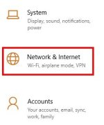
In the following Status dialog click on the Properties button.
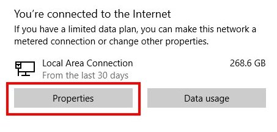
In the next dialog scroll down to the IP Settings section and click on the Edit button.
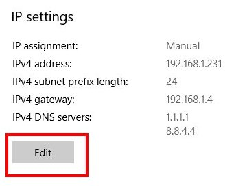
The Edit IP settings dialog will appear. Do the following.
- Set the mode to Manual.
- Make sure IPv4 is On.
- Set the IP Address to 192.168.1.2 or whatever IP Address is required.
- Set the Subnet Prefix length to 24.
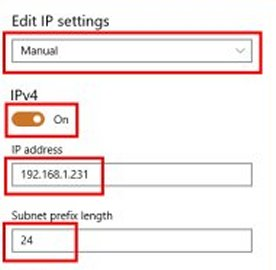
Click on the Save button. Your computer now has a static IP Address of 192.168.1.2.
To set your computer back to Automatic IP Address simply select the Automatic mode in the Edit IP settings dialog. You will want to do this when you have completed flashing the router.
Computer Firewall
The Windows Firewall can sometimes block a TFTP transfer so it is best to turn it off during this procedure. You will want to turn it on again after flashing the router.
Click on the Start button and enter defender into the search box. Select the Windows Defender Firewall Settings tile.
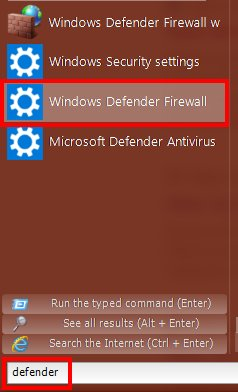
In the Firewall dialog select Turn Windows Defender Firewall on or off.
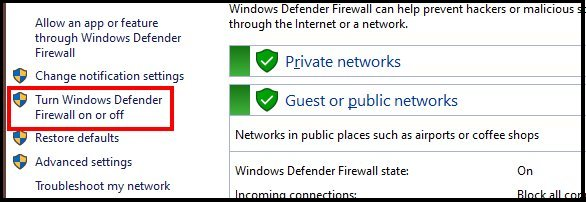
Select Turn Off Windows Defender Firewall for both Private and Public Networks. Click on the OK button.
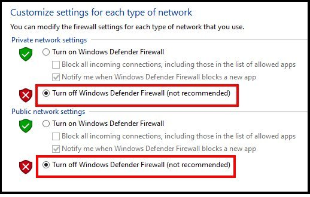
The Firewall is now disabled. Make sure you enable it again once you have flashed the router.
TFTP Server
Since the router is asking for a firmware file you must have a TFTP server running on the computer. There are many different TFTP servers for Windows but we will look at two that have been used successfully on a number of routers. These are the TFTPD32 program and the Tiny-PXE Server program.
TFTPD32
Unzip the archive into a folder. It does not need installation to use. Copy your firmware file into this folder as well. Since each bootloader has different tftp client and server IP Addresses and a dfferent name for the firmware file we must tell TFTPD32 what these values are. We do this by editing the tftpd32.ini file. Three lines need to be changed to match the values desired by the bootloader.
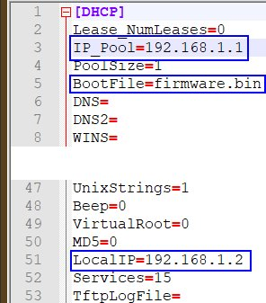
- IP_Pool - the IP Address of the TFTP Client.
- BootFile - the name of the fileware file to be used.
- LocalIP - the IP Address of the TFTP server (the computer's Static IP Address).
A note about these values. Each bootloader will have different values for these and a ot depends on which type of TFTP flashing is being done.
For example, a router that is automatically looking for a TFTP server when it first boots up may say the TFTP client is 192.168.88.1, the TFTP server must be 192.168.88.100 and the firmware file must be named firmware.bin. In this case you must rename your firmware file match the desired name. In this example the router broadcasts over the Ethernet that it wants firmware.bin from the server at 192.168.88.100 and it is to be sent to the client at 192.168.88.
But a bootloader that has it's TFTP session started manually via the reset button may have different requirements. It may only say the TFTP client is 192.168.1.1 and not specify the rest. The TFTP server IP can be anything in the same subnet as the TFTP client and the firmware file could be any name as long as the server knew which file was to be sent to which IP Address. In this case the router broadcasts over the Ethernet that the client at 192.168.1.1 wants any file from any server on the network. By editing the tftpd32.ini file we can tell the TFTP server which file is to be sent to the specific client.
Tiny-PXE Server
Unzip the archive into a folder. It does not need installation to use. Copy your firmware file into this folder as well and rename it firmware.bin. Tiny-PXE must be set up to work properly as a TFTP server. We do this by editing the config.ini file. Four lines need to be changed to achieve this. These are already set to the default values.
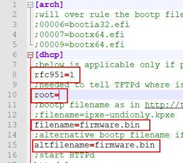
The rest of the changes to Tiny-PXE are done when we run the program.
Starting the TFTP Server
With the computer set with Static IP, disabled Firewall and a TFTP server, we are ready to flash the router. Unplug the power from the router and connect one of it's LAN ports to the computer using an Ethernet cable. If you are using tftpd32 then start the TFTP server running by double clicking on the tftpd32.exe file. You will see the TFTP server running.
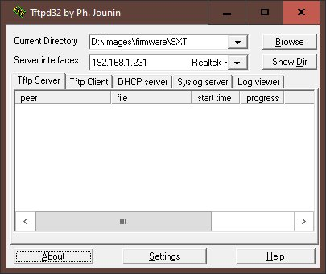
If you are using Tiny-PXE then start the TFTP server by double clicking on the pxe32.exe file. You will see the Tiny-PXE dialog appear. This needs to have some changes in order to use it.
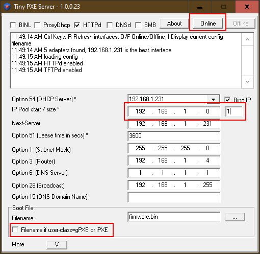
The important things here are the IP Pool start / size and the Filename if userclass=gPXE or iPXE.
The IP Pool defines which TFTP client IP the server will accept. You set this to an IP that is one less than the TFTP client IP and set the size to 1. For example, if the TFTP client is 192.168.1.1 then set the IP Pool to 192.168.1.0 and the size to 1. If the TFTP client IP is 192.168.100.10 then set the IP Pool to 192.168.1.9 and the size to 1.
The Filename if userclass=gPXE or iPXE box must be unchecked. Make sure the Next Server is the IP Address of your computer.
Tiny-PXE is started by clicking on the Online button. This is important as, unlike tftpd32, Tiny-PXE doesn't start the TFTP server automatically when it is executed.
Flashing the Router
If you are attempting to flash the router using the automatic TFTP file check at the start of boot up then just plug in the router's power. The TFTP server will show when it is uploading the firmware file to the router. When the upload is complete the router will begin to flash itself.
On the other hand, if you are trying to flash using the manual TFTP method you need to hold down the reset button and then plug in the router's power. Continue to hold in the reset button. Depending on the router, you may see the TFTP server uploading the firmware file after a short period, at which point you can release the reset button, or you may be required to release the reset button after the LEDs flash in a certain pattern. In any case, once the TFTP server uploads the firmware file to the router it will be flashed to the new firmware.
Once the firmware file is uploaded you can close the tftp32 or Tiny-PXE program, enable the Firewall and set the computer to an Automatic IP Address. You may not be able to access the router at it's new IP unless you do this.
Notes on TFTP Flashing
- Mikrotik routers that are flashed using the manual TFTP method generally require you to hold the reset button for about 15 seconds. This is indicated by an LED that will start to flash after 5 seconds, flashs for 5 seconds, goes solid for 5 seconds and then goes out. Release the reset button at this point. You will then see the TFTP server uploading the file to the router.
- Mikrotik routers set 192.168.1.1 as the TFTP client IP Address and require you to edit the tftpd32.ini file if using tftp32.
- Asus routers also set the TFTP client's IP Address to 192.168.1.1. They require you edit the tftpd32.ini file, if using tftp32, to set this IP Address and the name of the firmware file. Hold the reset button until the power LED starts to flash, then release.